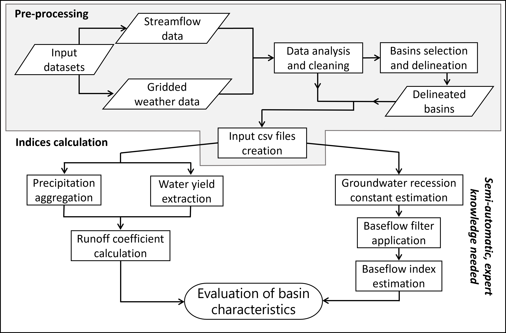
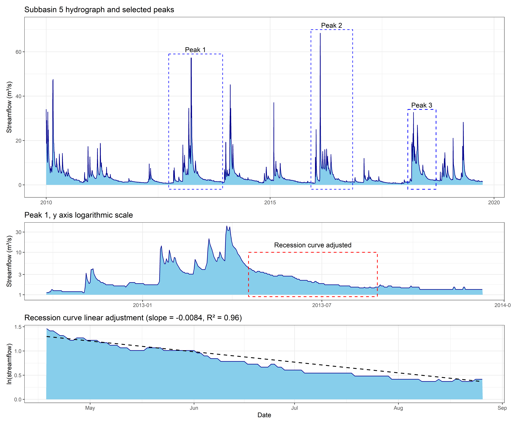
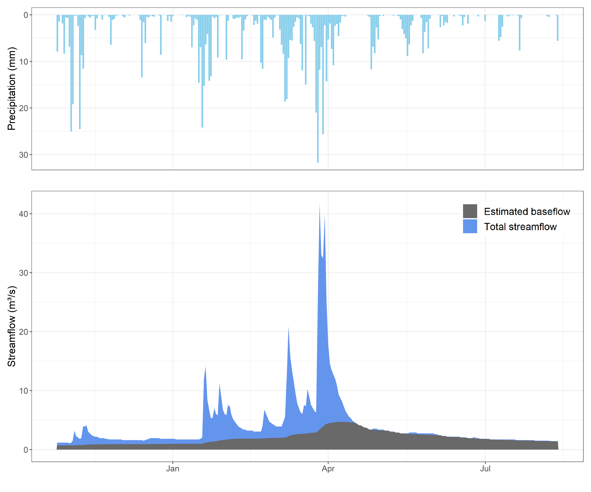
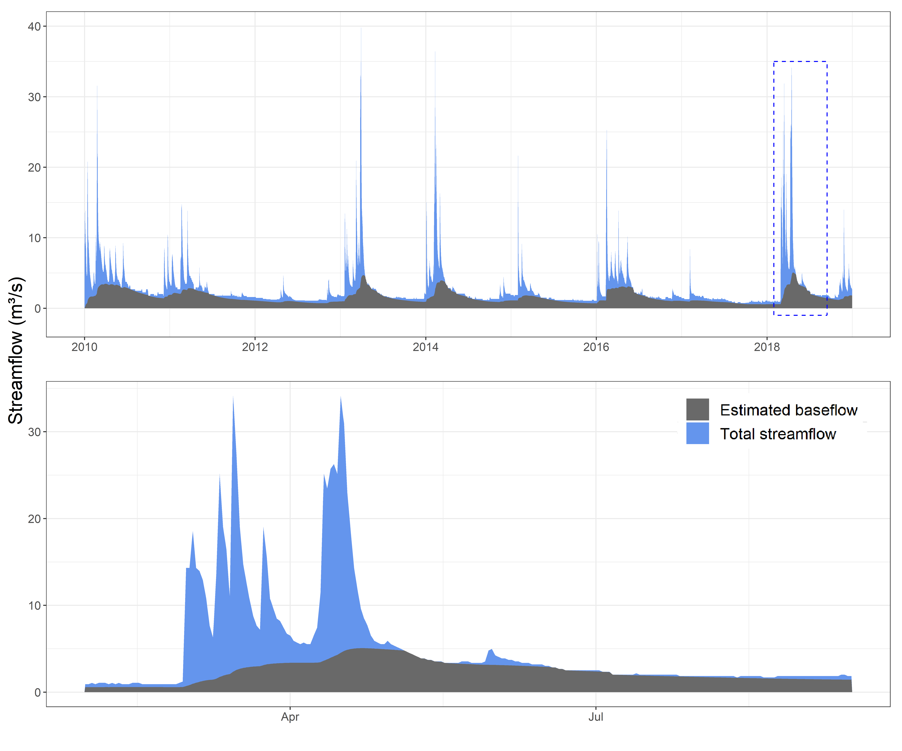

#title: “Soft_data_paper” #author: “Alejandro Sánchez Gómez” bibliography: Manuscript highlight-style: zenburn format: docx: reference-doc: template.docx fig-align: center #html: # toc: true # toc-depth: 4 # editor: visual
Soft data collection for realistic hydrological modelling: a reproducible methodology developed in R for estimating the runoff coefficient and the baseflow index.
Abstract
Hydrological models are useful tools for addressing water management challenges. However, sometimes model users do not necessarily have comprehensive knowledge of hydrological processes. This can lead to models with a misrepresentation of the reality behind them. Soft data can be used in a soft calibration process to ensure that the main hydrological processes are being realistically reproduced before addressing hard calibration. Thus, data of relevant hydrological variables are necessary to carry out this process. This work presents a soft data collection methodology developed in R, which allows to estimate two key hydrological variables: the runoff coefficient and the baseflow index. The code provided easily obtains the runoff coefficient for one or several subbasins with gridded precipitation data and streamflow records. The use of a baseflow filter is proposed to estimate the baseflow index, but rather than the usual automated methods, a supervised, semi-automatic procedure is proposed here to ensure an accurate hydrograph separation and consequently a realistic baseflow contribution estimation. The methodology has been tested in 19 subbasins of the Tagus River basin located in different geological regions, revealing its usefulness.
Keywords: Soft data
Highligths
- A soft data collection tool has been developed in R
- It allows estimating the runoff coefficient and the baseflow index at catchment scale
- Runoff coefficient can be obtained for multiple subbasins
- Guidance is provided for realistic baseflow estimation.
- Its usefulness has been tested in the Upper Tagus River basin (Spain)
1. Introduction
Hydrological models are extremely useful for addressing challenges in managing water resources and the availability of user-friendly interfaces facilitates their application [@gassman_applications_2014]. However, not all model users necessarily have comprehensive knowledge of hydrological processes, and thus they might rely on model outputs without the necessary critical thinking [@seibert_dialog_2002; @efstratiadis_one_2010].
In particular, hydrological modelling applications sometimes present results which are solely based on analysing the performance of a certain metric (or metrics) for the calibrated variable (e.g., streamflow, evapotranspiration, etc.), without further discussing if the simulated hydrological processes in the model resemble the reality of the study area [@bahremand_hess_2016; @acero_triana_beyond_2019]. The problem of equifinality within modelling techniques is well known: unrealistic parameter values can provide statistically satisfactory simulations [@muleta_model_2012; @molina-navarro_impact_2017]. Thus, particularly at catchment scale, modellers should attempt to ensure that at least the main components in the water balance are properly represented. It should be also checked that the contribution of the different streamflow components (surface, lateral and groundwater contribution) resembles what is expected in the study area.
Some researchers discussed this issue in recent years and proposed the use of soft calibration techniques in order to achieve more realistic hydrological models [e.g., @arnold_hydrological_2015], i.e., assessing model results against soft data, such as annual averages of the water balance components or the expected relative contribution of the different components of streamflow. Soft calibration can be followed by hard calibration, which would involve the comparison of simulated and observed time series of a certain variable. The works of Pfannerstill et al. [-@pfannerstill_how_2017] and Chawanda et al. [-@chawanda_mass_2020] are examples of successfully using soft data for calibration of hydrological models.
Various types of information fit the definition of soft data; from a range of expected values for a model parameter to a maximum water level value based on historical records [@efstratiadis_one_2010]. Two key soft data variables are the runoff coefficient and the baseflow index [@blume_rainfallrunoff_2007], especially in Mediterranean regions. The runoff coefficient is the fraction of precipitation volume that becomes streamflow. It is not constant and depends on factors such as soil type, lithology, topography, or the characteristics of precipitation events. The runoff coefficient can also be used to estimate the evapotranspiration ratio, which is the main loss of the water balance in Mediterranean regions [@garcia-ruiz_jose_2011]. In contrast to precipitation and streamflow, measurements of actual evapotranspiration are rare at catchment scale. Thus, despite having some limitations, the runoff coefficient helps to understand the water balance of a basin. The runoff coefficient can be estimated for any area where precipitation and streamflow data are available. Even though both streamflow and precipitation data are available in Spain, studies estimating this variable in the literature are limited to specific rainfall events, focusing on the factors that influence runoff generation [e.g., @kirkby_influence_2002; @rodriguez-blanco_rainfallrunoff_2012]. To the best of our knowledge, there is a lack of studies analysing long time series that could be used for calibration purposes.
Baseflow is the fraction of the streamflow that is released from natural water storage systems such as glaciers or aquifers, and therefore does not respond immediately to precipitation events. Even though streamflow released by the soil (i.e., lateral flow) is also delayed, its delay is smaller and it is not considered as baseflow. Groundwater is the main source of baseflow in Mediterranean areas, and it is responsible for maintaining streamflow during dry periods, which is essential for water supply, water quality and ecosystems functioning [@lopez-vera_groundwater_2012]. It is therefore a key element of the water balance, which can represent more than half of the basin water yield [@jodar_groundwater_2017; @sanchez-gomez_streamflow_2023]. Groundwater flow depends on factors such as lithology, topography, climate or soil type, among others. The baseflow index indicates the fraction of the total streamflow that originates from baseflow. This variable can be estimated through different methods, such as using hydrological models [@samper_hydrological_2015], mass-balance methods with chemical tracers [@ortega_using_2015], or applying numerical or graphical methods to streamflow records to perform a separation of its components (baseflow and direct runoff) [@custodio_hidrologisubterranea_1983; @lyne_stochastic_1979]. Various digital filters for this separation have been developed, allowing to estimate the baseflow index using streamflow data only [@arnold_automated_1999; @kang_baseflow_2022].
Values of runoff coefficient or baseflow index for a certain catchment can be found in the literature if previous hydrological studies for that area exist. Some studies might also provide expected values for certain regions, depending on their climate and/or their hydrogeological characteristics [e.g., @custodio_hidrologisubterranea_1983]. However, a reliable soft calibration procedure would involve obtaining runoff coefficient and baseflow index estimates specifically for the catchment and time period of interest. This would help to ensure that the model is simulating the hydrological processes realistically, providing also a more robust starting point for the subsequent hard calibration. Thus, to avoid the issue of creating unrealistic hydrological models, there is a need to develop procedures and methodologies that derive soft data variables for a certain area and period, encouraging modellers to perform a soft calibration before hard calibration.
However, obtaining values for these two indices in a particular catchment requires tedious work of data collection and processing. Regarding the runoff coefficient, it would involve the collection of precipitation data and its interpolation to have a catchment average, as well as gathering streamflow gauging records for the same period and converting them to the appropriate units to calculate the desired coefficient. Regarding the baseflow index, the work would involve collecting hydrographs of several streamflow peaks to then apply hydrograph separation techniques [@custodio_hidrologisubterranea_1983; @gustard_manual_2008], thus being able to calculate the groundwater contribution for the period of interest. This sometimes has been done manually [e.g., @molina-navarro_hydrological_2016], while other authors have used automatic computerized techniques [@kang_baseflow_2022]. Among those, Arnold and Allen [-@arnold_automated_1999] developed a software that incorporates a digital filter for baseflow estimation that have been used in numerous modelling applications [e.g., @meaurio_evaluation_2015; @senent-aparicio_introducing_2021]. This tool analyses a daily streamflow record and provides three different estimates of baseflow contribution that vary noticeably. Koffler et al [-@koffler_lfstat_2022] have developed an R package which estimates the baseflow index through a linear interpolation of minima turning points in a streamflow time series, which could also lead to uncertainties depending on the hydrological regime [@gustard_manual_2008]. A more reliable hydrograph separation, however, would involve an active user involvement to guide the separation process.
Thus, there is need of developing tools to derive realistic values of these two soft data variables for one or several catchments, for a certain period, and using the same working environment. This would ultimately encourage modellers to subsequently perform soft calibration procedures, thus advancing towards a better hydrological modelling. Besides, in those basins that present heterogenous hydrological properties, deriving these variables for several sub-catchments could allow carrying out zonal calibrations, which might result in more robust models [e.g., @sanchez-gomez_optimization_2022].
The main goal of this work is to present a reproducible methodology developed in R for collecting two soft data variables at catchment scale, namely the runoff coefficient and the baseflow index, for a certain area and time period, using precipitation and streamflow data, and also requiring expert knowledge in the baseflow index case to guarantee obtaining realistic values. To prove the applicability of the methodology, it has been applied to the Upper Tagus River Basin (UTRB) in Spain. The UTRB is geologically heterogeneous and modelling its complex hydrological system can greatly benefit from spatially distributed soft information on the dominant hydrological processes. Therefore, the case study also demonstrates how the methodology allows obtaining different values of these two variables for several geological regions within the basin, which might ultimately serve to guide a subsequent and reliable soft calibration procedure.
2. Methodology
2.1. General workflow
The proposed methodology requires the following input datasets: i) a file with daily streamflow data from the selected gauging stations with an identifier; ii) a directory with gridded meteorological data (precipitation and temperature) and a vector layer (point type) with the location and identifier of the grid points (temperature data is not required to calculate the selected indices, but these two variables usually come together and it is worthy to include it in the code flow since temperature directly affects evapotranspiration and therefore the runoff coefficient, so it might be useful for analysis and discussion of results); and iii) a single vector layer (polygon type) with the delineation of all the subbasins to be analysed (i.e. the drainage areas of the streamflow stations selected, that should be prepared beforehand).
Once the input datasets are ready, the first step consist in create two csv files that will be used as inputs in posterior processes. The first file, created from the basins vector file, contains information about the subbasins. The second file, define the weather grid points that should be used to calculate the weather variables in each subbasin. Once the input data is created and read, the R code allows estimating the runoff and baseflow coefficients, being the user guided both by the comments provided in the code and by the recommendations given in this manuscript, particularly towards the baseflow index calculation. Two more files which contains the results of the baseflow index calculation are created. Also, some output files which summarize the more relevant information are automatically created with the code, examples can be found in Appendix XXX. ?@fig-worflow shows the general workflow of the proposed methodology, and the different steps are fully described in the next subsections.
 The usefulness of this methodology has been tested in the Upper Tagus River Basin (UTRB), a catchment highly relevant for water management in Spain that is described below. The data sources used in this manuscript allow to directly reproduce the methodology proposed anywhere in Spain, but as long as the data requirements abovementioned are available, it can also be applied anywhere in the world with minor code adaptations to read different input data formats.
2.2. Study area
The Tagus River (Figure 1) is the longest river in the Iberian Peninsula, and with approximately 11 million inhabitants its basin is the most populated. Water resources in this basin are scarce considering the high water demand for irrigation and human consumption. It is expected that climate change will exacerbate this situation [@garcia-ruiz_jose_2011, @sanchez-gomez_streamflow_2023, @bednar-friedl_europe_2022]. In addition, a water transfer system diverts water from the headwaters of the Tagus River to the southeast of Spain to satisfy irrigation and human consumption demands. Thus, realistic hydrological modelling of this basin is of utmost importance in order to make reliable future assessments of, for example, climate change impacts.
The study area for this work is the upper part of the Tagus River basin (UTRB), which has a size of 33,880 km², i.e., approximately 40% of the entire Tagus River basin (Figure 1). It is delimited by three mountain ranges: the Central System in the north, the Iberian System in the east, and the Toledo Mountains in the south. The altitude of the UTRB ranges from 2,400 m.a.s.l. in the Central System mountain range to 360 m.a.s.l. at its outlet in Talavera de la Reina (Toledo). The study area is characterized by a continental Mediterranean climate, which varies depending on factors such as altitude, proximity to the ocean and latitude. Chazarra et al. [-@chazarra_bernabe_mapas_2018] classified it as temperate (C) and dry (B) following the Köppen-Geiger climate classification for the period 1980 to 2010. The mean precipitation for that period was 550 mm, with values higher than 1.400 mm in the Central System and lower than 400 mm in the driest areas of the southern part of the UTRB. The mean temperature is 12ºC, ranging from 8ºC to 10ºC in the Central System to 13ºC in the east and 17ºC in the west [@chazarra_bernabe_mapas_2018]. The average precipitation and water yield of the basin decreased over the last decades, which can be attributed to the impacts of climate change [@garcia_serie_2017].
Natural vegetation and agricultural lands are the main land covers in the UTRB, occupying around 48% and 47% of the total area, respectively. The dominant crops are cereals, followed by other crops such as sunflower or legumes. Urban land covers around 3% of the total area.
Due to mountain systems with different bedrocks, the UTRB is characterized by a heterogeneous geology and the dominant hydrological processes vary within the different geological zones [@custodio_hidrologisubterranea_1983; @sanchez-gomez_optimization_2022]. Direct runoff is expected to be predominant in the Central System and in the Toledo mountains, which are composed of igneous and metamorphic rocks with low permeability. In contrast, the carbonate rocks of the Iberian System are important aquifers and baseflow is expected to be more relevant there. The sedimentary deposits of the basin also have varying hydrological properties, including Tertiary rocks and Quaternary alluvial sediments with high permeability that are relevant aquifers, and detrital and evaporitic materials with low permeability.

2.3. Input data preparation
Daily precipitation and temperature data for the UTRB were obtained from the Spanish Meteorological Agency (AEMET) grid [5 km resolution, @garcia_serie_2017], which includes data for all of Spain from 1951 to 2019. This database was transformed into SWAT readable format by Senent-Aparicio et al. [-@senent-aparicio_impacts_2021], being the one used in this work since it is much easier to handle than the original AEMET format. A point vector layer containing the location of the centroids of the weather grid cells was created and each point was assigned a unique identifier.
Streamflow data was collected from the CEDEX streamflow gauging stations annual report [@cedex_anuario_2021], which contains daily records of all gauging stations in Spain.
The datasets were visually inspected and statistically analysed to ensure their reliability. In the case of streamflow data, verification of data availability for the entire working period is recommended and was performed for the UTRB (Appendix XXX), since missing data can lead to incorrect results.
The last required input is a vector file containing the polygons of the subbasins to be analysed. This step was intentionally taken out of the R workflow, since they might already be delineated, or the user might prefer to delineate them using a GIS software to guarantee a reliable delineation (often the delineation steps need to be visually inspected at various zoom levels and/or by overlaying them with aerial imagery or other spatial data).
To obtain reliable values of the indices, the selection of subbasins has to be based on two criteria: the availability of streamflow records for the desired working period, and having a mostly undisturbed regime, without any major reservoirs in the catchment or significant water withdrawals. An additional third criterion was used in the study case presented in this manuscript: the geological region in which the catchment is located. Grouping the subbasins in regions (geological or of any other desired type) might be useful for deriving average indices values per region for a subsequent soft calibration process. Finally, 19 subbasins were identified as suitable for the calculation of runoff and baseflow coefficients for the different geologic zones Figure 1.
For the study case presented, four different geological regions or substrates were defined according to the lithology and permeability of the UTRB [@del_pozo_gomez_mapa_2009]. The defined regions are: i) an impervious region (IMP), with low and very low permeability metamorphic and igneous rocks; ii) a carbonate region (CRB), composed by carbonate rocks with high and medium permeability mainly; iii) a high and medium permeability detrital region (DTH), conformed by high and medium permeability Tertiary sedimentary rocks and Quaternary sediments; and iv) a low permeability detrital region (DTL), conformed by detrital and evaporitic materials with low permeability (i.e., marls, gypsum).
As most of the subbasins had more than one type of substrates within, the proportion of each material in each subbasin was calculated, and can be found in Appendix XXX. Subbasins where at least 70% of the area was composed of one substrate were considered representative for the IMP, CRB and DTH regions. However, for the DTL substrates, they were not dominant in any gauged subbasin, and therefore subbasins with at least 25% of this substrate were considered representative. Finallt, three to four representative subbasins were selected for each geological zone (Figure 1, Appendix XXX), and six basins with a mixed lithology were chosen additionally, in order to characterize the hydrologic behaviour in heterogeneous regions (MIX).
The working period selected to obtain the runoff and baseflow coefficient was 2010-2018. This is because the main goal of this manuscript is to present a methodology to obtain these two variables for a certain modelling period so they can afterwards guide a subsequent soft calibration process. This period seemed convenient since it contains the latest available data and enough years for a future model evaluation in which the observed indices can be compared with simulated ones. Besides, this period is long enough to cover a large interannual climate variability, with dry, wet, and average years, which is desirable for future modelling purposes so the calculation of runoff and baseflow coefficients takes into account different climatic conditions. Some of the subbasins selected for the study case (subbasins 2, 6 and 14) did not have streamflow records for the entire time period, but were considered important for ensuring that all of the geological regions in the UTRB were adequately represented. In these cases, only the years with complete data were used for calculating the runoff and baseflow coefficients. More information about the selected subbasins and their available streamflow data can be found in Appendix XXX.
2.4. Creating workflow input files
The first step performed within the proposed R workflow creates two files that identify the relevant input data for the individual subbasins of interest.
After loading the basins vector file, the sf and dplyr packages [@pebesma_simple_2018; @wickham_tidyverse_2022] are used to calculate the area of each subbasins, and a field with the identifier of the gauging station for each subbasin have to be introduced, finally creating the file 1_basins_file.csv. Next, all the weather points located within a subbasin or a 1 km buffer outside its boundary are assigned to the respective subbasin using the weather grid vector file and the subbasin shapefile. Buffer extension is defined by the user, and depends on weather data resolution. A csv file containing the identifier of each grid point located in the subbasins and which subbasin it belongs to is then created and saved as 2_ids_stations_file.csv. Note that in the weather datasets used in the case study presented, the identifiers and location of the precipitation and temperature grid points are the same, so only one file is needed for both variables. If that is not the case, two different files have to be created (following the same methodology) and used for the calculation of precipitation and temperature (see section 2.5). An example of the code used to create both files can be found in Appendix XXX. The two generated csv files are the input files required for the calculation of the runoff and baseflow coefficients (see sections 2.5 and 2.6).
Since the processes related to the baseflow index estimation are not automatic, two additional files to store the outputs of this processes are automatically created. These files are 3_alpha_estimation.csv, which contains the estimated alpha values and other data generated during this working step, and 4_groundwater_results.csv, where the used values of the filter parameters and the baseflow index estimations are saved. These files can be found in the accompanying GitHub repository (see Data availability section).
2.5. Runoff coefficient calculation
For the calculation of the runoff coefficient, input precipitation and streamflow datasets (section 2.3) and the input csv files created in the previous working step (section 2.4) are used.
The code (Appendix XXX) automatically aggregate precipitation and runoff data and calculate the runoff coefficient in average and for each year. The observed streamflow data is aggregated from daily streamflow records (m³/s) to annual contribution values (mm/year) using the subbasin area. Daily precipitation data (mm) is aggregated to calculate annual precipitation (mm/year) for each grid point and then the average precipitation for each subbasin. In addition, the average maximum, minimum and mean temperature is calculated. Then, the average runoff coefficient for the selected period in each basin is calculated, allowing also to extract annual values to analyse the interannual variation. If the area of study contains several regions, like the geological regions of the study case presented, the code allows the user to calculate the average runoff coefficient per region too (Appendix XXX).
2.6. Baseflow contribution estimation
The methodology proposed calculates the baseflow contribution for the selected subbasins using a two-parameter baseflow filter function following the equations in Eckhardt [@-eckhardt_how_2005], which are in turn based on the Lyne and Hollick [-@lyne_stochastic_1979] algorithm and subsequent modifications by Chapman [-@chapman_comparison_1999-1] and Chapman and Maxwell [-@chapman_baseflow_1996]. This algorithm has already been used in other automated methods for estimating baseflow [@arnold_automated_1999], but in this manuscript, rather than applying a fully automatic baseflow separation, we provide recommendations for a semi-automatic application guided by expert knowledge, and thus ensuring a highly realistic calculation of baseflow contribution for the different subbasins to be analysed.
First, the theoretical basis for the baseflow separation and calculation is explained, since some clarification is needed to understand how to obtain the required parameters for the baseflow filter application. Equation 1 calculates the baseflow (same units than the observed data) for a day (bk) based on the two filter parameters (alpha and BFImax) and the streamflow of this day (yk).
\[ b_{k} = \frac{(1 - BFImax) * alpha * b_{k-1} + (1 - alpha) * BFImax * y_{k}} { 1 - alpha * BFImax} \tag{1}\]
BFImax is the maximum value of baseflow contribution expected for one day (fraction), and alpha is defined by Eckhardt [@-eckhardt_how_2005] as a recession constant in the form [notice that in [@eckhardt_how_2005] manuscript this parameter is defined as ‘a’, but in the R function is computed as ‘alpha’, nomenclature that we decided to keep in the manuscript):
\[ b_{k} = alpha * b_{k-1} \tag{2}\]
This might lead to confusion, since the recession constant in hydrogeological literature is usually presented as α, and defined as , Equation 3:
\[ Q_{t} = Q_{0} * e^{-α * t} \tag{3}\]
where Q0 is the streamflow at the beginning of the recession and Qt is the streamflow on day t. However, Equation 3 can be converted to a linear equation (\(y = mx + b\)) using logarithms, where the intercept is the streamflow at the beginning of the recession and the slope is the classisc groundwater recession constant (α):
\[ ln(Q_{t}) = ln(Q_{0})-α * t \tag{4}\]
Considering Equation 2 and Equation 3, when \(t = 1\), and making the assumption that during the recession all the flow is baseflow, it can be inferred that:
\[alpha = e^{-α} \tag{5}\]
The proposed procedure to estimate the groundwater contribution consist in the following steps: i) estimating the value of alpha, ii) apply the baseflow filter, changing the values of alpha and BFImax until a realistic baseflow separation is achieved, and iii) calculate the groundwater contribution.
For the estimation of alpha as incorporated in the filter, the groundwater recession constant can be calculated in its classic way (α), using the function attributed to Maillet , Equation 3. As explained above, if this equation is converted to a linear one using logarithms (Equation 4), α becomes the slope of this linear equation and can be estimated. To reduce uncertainty, we recommend to identify the groundwater recession curve for three representative streamflow peaks in each subbasin. These peaks can be selected considering aspects such as their magnitude, duration and shape (Figure 2). Then, the linear regression of the natural logarithm of the streamflow on the recession time (Figure 2) is performed using the stats::lm() function, obtaining a linear equation similar to Equation 4. The initial point of the recession curve has to be selected when the direct runoff ceases and the baseflow takes maximum values. Despite the ambiguity in determining the beginning and the end of the recession curve [@blume_rainfallrunoff_2007], representing the streamflow with a semi logarithmic axis can help to determine these points, since the recession curve conforms approximately to a straight line (Figure 2). A minimum of 10 days of recession curve, which ensures that the linearity of the equation is a good approximation [-@chapman_comparison_1999-1], and a minimum determination coefficient value of 0.8 are recommended as criteria for calculating the groundwater recession constant. Even though a recession curve without any precipitation is desirable for adjusting the linear regression, it is not always possible to comply with this condition. A longer recession curve might be preferred despite including some precipitation events, since the recession curve tends to be steeper at the beginning of the recession (due to soil water recession). Once the slope of the linear regression equation (α) was calculated, the recession constant as included in the baseflow filter (alpha) can be calculated following Equation 5, thus having three values of this parameter (from the recession of three hydrograph peaks) that can be used as reference to apply the baseflow filter. Figure 2 resumes the process to estimate the groundwater recession constant.

Once an estimated value of alpha has been obtained the baseflow filter can be applied. Different values of alpha and BFImax should be tried until reaching a realistic baseflow separation. In order to know how these parameters work functioning, their effects on the baseflow estimation has been assessed (Figure 3). Both parameters are noticeably sensitive to the baseflow component separation. BFImax directly affects the amount of baseflow that the filter estimates, as it is the maximum baseflow ratio expected (Figure 3, left). alpha controls the response of baseflow to episodes of flood or recession. Higher values of alpha result in a lower sensitivity of baseflow to those changes (smoother fluctuations), which in turn also has an impact on the total amount of baseflow. Both parameters are closely related to the lithology of a basin: basins with aquifer systems will have a higher contribution of groundwater to streamflow than impervious basins, and therefore should have higher BFImax values. Permeable basins with higher aquifer-river connectivity (i.e., sandy aquifers) will be more sensitive to recharge-discharge episodes than basins with less permeable substrates (e.g., clayey aquifers) and therefore the alpha value, which is related to the transmissivity, will be lower. Accordingly, the properties of a basin must be taken into account before setting the parameters of the baseflow filter, as for example reported in Kang et al. [-@kang_baseflow_2022].

The baseflow separation is computed for all the observed data period, but it is evaluated individually for each peak defined during the alpha estimation. A realistic separation should be achieved for the three peaks, ensuring that the suitability of the selected parameters. Despite it would vary according to the basins characteristics, a realistic baseflow separation may be similar to the one presented in Figure 4, where baseflow fraction regarding total streamflow is maximum during dry periods and minimum when there are precipitation events. Precipitaiton is plotted above the baseflow separation, which help to perform and evaluate it.

Once a realistic baseflow separation has been achieved, the contribution of groundwater to the streamflow (Bfc) for the evaluated period can be calculated with Equation 6 once, where n is the number of days for which the filter is applied, bfk is the baseflow contribution for the day k and rnk is the runoff contribution for the day k (units equal to the observed data).
\[ Bf_c = \frac {\sum_{1}^{n} bf_k} {\sum_{1}^{n} (bf_k + rn_k)} \tag{6}\]
All the information about the baseflow separation process is saved into two files. Regarding the alpha estimation, the peaks definition, the recession curve definition and duration, the determination coefficient and the groundwater recession constant and alpha values are saved in the 3_alpha_estimation.csv file, being some used in the baseflow separation process. In the 4_groundwater_results.csv file, the values of the parameters used in the filter and the obtained baseflow contribution is saved.
3. Results and discussion
3.1. Study case application
3.1.1. Runoff coefficients
Runoff coefficients were calculated for 19 subbasins of the UTRB for the period 2010-2018 (with some exceptions for subbasins 2, 6 and 14), and both average and annual values were evaluated considering the precipitation, temperature, and geological region. Appendix XXX contains the mean, maximum and minimum runoff coefficient values obtained for each subbasin, and the mean precipitation and temperature for the time series. Results for each subbasin can also be found in the GitHub repository.
The variability obtained in the runoff coefficient values highlight the importance of obtaining and analysing soft data before calibrating a hydrological model. The values for the mean runoff coefficient for the different subbasins of the UTRB ranged from 47% in subbasin 2 to 2% in subbasin 13. Within the subbasins, the runoff coefficient also varies greatly from year to year (e.g., the maximum value for subbasin 10 is 15 times higher than the minimum value, Appendix XXX), being thus necessary to evaluate a period representative of the weather conditions. As expected, the runoff coefficient is related to the mean precipitation (less precipitation led to lower values of the runoff coefficient), the mean temperature (higher temperatures result in higher evapotranspiration rates and lower runoff coefficients), and also to the geological region (Appendix XXX). However, in some years and subbasins the runoff coefficient appears to also be influenced by other factors. A further comprehensive analysis of the yearly runoff coefficient variation taking into account different variables (precipitation, temperature, slope, surface, main land cover, lithology, etc.) could be performed, but was beyond the scope of this work. Table 1 presents the average runoff coefficient per geological region calculated from the full results (Appendix XXX).
| Region | Mean Temperature | Mean Precipitation | Mean Runoff coefficient | Min Runoff coefficient | Max Runoff coefficient |
|---|---|---|---|---|---|
| IMP | 11.58 | 799 | 0.327 | 0.14 | 0.47 |
| CRB | 10.22 | 762 | 0.400 | 0.37 | 0.45 |
| DTH | 14.05 | 503 | 0.065 | 0.05 | 0.09 |
| DTL | 13.00 | 483 | 0.040 | 0.02 | 0.08 |
| MIX | 11.89 | 632 | 0.153 | 0.03 | 0.36 |
The influence of lithology becomes evident when aggregating to the region scale. The runoff coefficients are highest in the IMP and CRB regions, where not only precipitation and temperature are more favourable for generating runoff, but also the lithology and the mountainous topography. It should be noted that the subbasins selected in the CRB region are closely located (Figure 1) and thus have a similar climate. Therefore, the runoff coefficient varies less than within the IMP region, where subbasin 3 is located in a more arid and warmer region than subbasins 1 and 2. The DTH and DTL regions are flatter and warmer than the CRB region, and evapotranspiration is favored under these conditions [@custodio_hidrologisubterranea_1983], resulting in runoff coefficients of less than 10%. Even though some areas of the DTL region are composed of medium permeability carbonate and detrital materials (Appendix XXX), the runoff coefficient in this region is lower than in the DTH region, indicating a high influence of the low permeability materials, which in combination with a flat topography, low precipitation and warmer temperatures, lead to very high evapotranspiration. Due to the flat topography, it would be possible that a small amount of the recharged water is released to streams downstream of the gauging stations, but it is not expected to be a significant amount.
As expected, the subbasins used to characterize regions with a mixed lithology (MIX) yielded the widest range of runoff coefficient values. In line with the results discussed above, mixed lithology subbasins where igneous, metamorphic, or carbonated materials dominate had higher runoff coefficient values, while lower values were obtained for the mixed subbasins where detrital materials with low permeability are present (e.g., subbasins 17 or 18, Appendix XXX and XXX).
3.1.2. Groundwater contribution analysis
Table 2 summarizes the results of the process for estimating the alpha filter parameter in the different geological regions, which is the first step required for the subsequent application of the baseflow filter. alpha estimation process, i.e., the average duration of the recession curve, the average determination coefficient, the average α and the average alpha value and standard deviation, for the geological regions. Results for the individual subbasins can be found in Appendix XXX.
Table 2 summarizes the results of the process for estimating the alpha filter parameter in the different geological regions, which is the first step required for the subsequent application of the baseflow filter. This includes the average duration of the recession curve, the average coefficient of determination, the average α and the average alpha value and standard deviation. Results for the individual subbasins can be found in Appendix XXX.
`summarise()` has grouped output by 'Basin', 'Basin_ID'. You can override using
the `.groups` argument.| Region | Average recession curve time (days) | Mean coefficient of determination | Mean groundwater recession constant (a) | Mean alpha value | Alpha standard deviation |
|---|---|---|---|---|---|
| IMP | 48 | 0.956 | -0.040 | 0.961 | 0.014 |
| CRB | 144 | 0.927 | -0.009 | 0.991 | 0.004 |
| DTH | 49 | 0.910 | -0.037 | 0.964 | 0.012 |
| DTL | 76 | 0.897 | -0.025 | 0.976 | 0.025 |
| MIX | 70 | 0.930 | -0.028 | 0.973 | 0.025 |
The lithology has a noticeable influence on the recession curves seen in the hydrographs fot the different geological regions (Appendix XXX). The recession curve duration is directly proportional to the aquifer properties of the subbasin. Subbasins with a carbonate lithology have an average recession curve duration that is three times longer than the recession curve duration of the IMP or DTH regions, which can also be observed when comparing the hydrographs (Appendix XXX). Since some of the subbasins in the DTL region include areas with a carbonate lithology, the duration of the recession curve is also longer (due to the CRB carbonate lithology areas). In the CRB subbasins, the end point of the recession curves was chosen when a precipitation event caused a relevant increase in the streamflow, while in the IMP or DTL region this point was generally chosen when the streamflow ceased. Due to the higher transmissivity of the DTH aquifers and its smaller storage capacity regarding the CRB subbasins, groundwater flow is less important in these subbasins, and they are characterized by a smaller and faster recession process that does not always maintain streamflow throughout the entire dry season. In the IMP region, groundwater is not expected to be as relevant as in the other substrates, and accordingly the expected recession time is shorter. However, other hydrological processes (snowmelt, precipitation frequency) in subbasins 1 and 2 of this region might significantly impact the recession curve (Appendix XXX).
The average values for the coefficient of determination of the recession curves selected are in general higher than 0.9, which indicates that this selection was appropriate. The subbasins with highest determination coefficients are characterized by more homogeneous recession processes, and the recession curve selection was easier (e.g., in the CRB or IMP regions).
The obtained alpha values are related to the recession curve duration and magnitude. They generally matched our expectations: the CRB region yielded the highest alpha (and therefore the longest recession period), while the lowest value was obtained for the IMP region. As discussed above, some other processes occurring in the IMP region might be extending the recession period, and therefore the obtained alpha values are similar to the DTH values. The standard deviation of alpha (@alpha_values) reveals the variability in the recession of the subbasins within a region. It was the largest in the heterogenous MIX and DTL regions, and smallest in the CRB region, which indicates that the recession process is similar in its subbasins.
Then, a range of potential alpha values to use in the filter was estimated since this parameter was estimated for three hydrograph recession curves, as explained in section 2.6. Values within this range were used for running the baseflow filter in order to obtain a realistic separation of the hydrograph components. These ranges were often expanded since both alpha and BFImax are linked (@alpha_values) and the ultimate goal is to achieve the most realistic hydrograph separation possible. Also, because under real circumstances, the recession curve (and consequently the alpha value) might be affected by other processes like snowmelt, precipitation events during the recession period, or withdrawals or releases related to human activities
The values of BFImax were initially estimated based on the abovementioned recommended values in Eckhardt [@-eckhardt_how_2005], together with the knowledge the research team on the study area. However, these recommended values led in some cases to an overestimation of baseflow (although they could be appropriate for other regions), and were then tuned by using the filter towards achieving a realistic hydrograph separation by visual inspection following the recommendations in the literature [e.g.; @custodio_hidrologisubterranea_1983]. The final selected values for alpha (Table 3) slightly differed in some cases from the estimated ones (@alpha_values), as a realistic streamflow components separation for the three evaluated peaks was preferred than using the exact estimated values. Then, the baseflow index was calculated for the entire period with Equation 6.
Table 3 shows the average values of the parameters used for the different regions and the value of the baseflow index estimated with the baseflow filter. Appendix XXX contains this information for each of the subbasins.
| Region | Mean alpha used | Mean BFImax used | Estimated baseflow index | Baseflow index standard deviation |
|---|---|---|---|---|
| IMP | 0.988 | 0.35 | 0.26 | 0.04 |
| CRB | 0.996 | 0.65 | 0.49 | 0.07 |
| DTH | 0.986 | 0.52 | 0.42 | 0.04 |
| DTL | 0.995 | 0.55 | 0.43 | 0.11 |
| MIX | 0.988 | 0.42 | 0.37 | 0.12 |
| Average parameter values used in the baseflow filter and groundwater indexes estimated at region scale. | ||||
Subbasins located in geological regions with low permeability were expected to have a lower baseflow index, while those located in regions with relevant aquifers were expected to have higher. A baseflow index of 26% was estimated for the IMP region. This value might be considered high for impervious basins, but based on the knowledge about the subbasins and the assessment performed, it is considered reasonable. Some indicators, such as the presence of flow during dry periods or phreatophyte vegetation suggest a relevant groundwater contribution, and these indicators have been observed in some of the subbasins characterized as impervious in this work [@martin-loeches_hydrogeochemistry_2020].
As expected, the CRB region had the highest baseflow index: it is dominated by a carbonate geology with karst processes and its climate is colder and more humid. Around 50% of the streamflow was estimated as groundwater contribution, which is in agreement with previous studies [@sanchez-gomez_optimization_2022] and considered to be a realistic value taking into account the properties of the region. The baseflow index is higher in some of the studied subbasins, e.g., subbasin 6, where a groundwater contribution of 55% percent was estimated (Appendix XXX).
Despite their different permeability, the obtained values of groundwater contribution were similar in the two detrital regions. As mentioned in section 2.3, this could be because the subbasins considered as representative of the DTL region are actually composed by mixed materials (with relevant areas of carbonate and detrital materials with medium and high permeability). With lower altitudes and a flatter landscape, precipitation is relatively low in the part of the UTRB where these two detrital regions are located. However, runoff coefficients obtained for DTL region are noticeably lower, pointing to a very high evapotranspiration in the low permeability areas (percolation is reduced and more water is therefore available for evapotranspiration). In contrast, in the permeable areas of the DTL subbasins, a larger fraction of water infiltrates, recharges the groundwater and becomes streamflow. In consequence, groundwater contribution in the DTL region is higher than it could be expected considering its lithology, as the permeable areas contribute more to the streamflow than the low permeability ones. The hydrographs of the subbasins within the DTL region reveal this behaviour, since baseflow is maintained throughout the year (Appendix XXX).
In the subbasins located in mixed lithology regions, the average baseflow index obtained is 37%. Four of the subbasins representative of this region (subbasins 16 to 19, Appendix XXX) are mostly composed by carbonate materials from medium to high permeability (Figure 1), while only two of the subbasins have impervious igneous and metamorphic materials.
The standard deviation of the estimated baseflow rate among subbasins located in the same geological region was highest in the MIX region (0.12), followed by DTL region (0.12), where more different subbasins are grouped, while its samller in CRB (0.07) and in IMP and DTH regions (0.04).
Applying a baseflow filter such as the one used in this workflow require of some considerations that worth to be mentioned. As explained above, despite alpha values were estimated in the methodology, the used values differed in some cases, as a realistic baseflow separation was prioritized. An alpha value higher than 0.97, regardless the estimated one, is recommended to be used to obtain a realistic baseflow separation. The influence of factors such as snowmelt, precipitation events, reservoirs, or withdrawals or releases related to human activities, should be analysed and corrected if possible. regarding data reliability, when applying the filter, the amount of streamflow in one day affects the baseflow calculation in the following days. Therefore, if an anomalous value of streamflow is recorded (i.e., a very low -or zero- value in between higher values), we recommend to correct this value to achieve realistic estimates of baseflow. The data used for this work had only very few anomalous values that were corrected before applying the filter. Lastly, the time scale used to evaluate the separation of the hydrograph components can also have a significant impact on the baseflow index estimation. Figure 5 compares how a peak is represented when looking at it within an entire time series and when looking at it individually. Longer time series including several peaks might lead to a distorted visual perception of the baseflow separation that might make the user think that the groundwater contribution is larger than actually is. Thus, the proposed procedure of evaluating several peaks individually is strongly recommended.

3.2. . Contribution of the methodology presented to hydrological modelling
The methodology presented in this manuscript provides an R language code workflow to estimate both the runoff coefficient and the baseflow index for one catchment or several catchments, indices that can be used in a subsequent soft calibration process to guarantee achieving realistic simulations [@chawanda_mass_2020, @pfannerstill_how_2017]. Besides, it has been tested in 19 subbasins of a Spanish catchment, revealing the variability in those indices that might exist within one same catchment, and the importance to consider that variability if accurate modelling wants to be achieved.
First, the methodology allows to automatically calculate the runoff coefficient for a number of subbasins if gridded precipitation data and streamflow records area available. This facilitates modellers work, since the runoff coefficient calculation can be tedious, involving data interpolation, aggregation and units’ conversion. The data sources used for the study case presented as an example allow to fully reproduce the methodology in Spain; however, with small code modifications, it can be applied to any other place with gridded precipitation data, which is often available [e.g.; @blankenau_evaluation_2020]
Regarding the baseflow contribution to streamflow, it is true that several baseflow filters have been already developed by other authors [@arnold_automated_1999; @koffler_lfstat_2022]. These tools are fully automated, easy to apply, but this involves some simplifications that can lead to a separation of the hydrograph yielding a baseflow contribution that might not fully match with the real one. This could make modellers to guide a subsequent calibration procedure based on inaccurate values, particularly if they do not have a strong hydrological background and/or they do not have good knowledge of the study area modelled. With the methodology presented in this manuscript, we propose a semi-automatic, supervised application of a baseflow digital filter, with a previous step of hydrograph recession curves analysis to get a realistic value of the groundwater recession constant (a parameter needed by the filter) before its application. We provide guidance on how to address this workflow in R, the same working environment as for the runoff coefficient calculation, without the need of installing new software or converting the data. Despite the proposed methodology addresses the hydrograph separation after analysing three hydrograph peaks (and their respective recession curves), it still might not guarantee a fully accurate baseflow separation (e.g., baseflow underestimated towards the end of long low flows periods or slightly overestimated during peaks, Figure 4) and for some cases a compromise is needed to deal with these inaccuracies. These limitations have also been reported by other authors [@kang_baseflow_2022] and should be kept in mind when applying digital filters. Besides, the theoretical description of the filter presented in the manuscript shed some light on the understanding of the equation governing those filters, particularly towards the different definitions of the groundwater recession constant used in the literature. Collaterally, the guided calculation of this constant provides values of this parameter that can be used in a subsequent hard calibration.
Finally, the large differences between subbasins and geological regions obtained for the two soft indices analysed in the study case (@Runoff_rate_regions and @Groundwater_regions) reveal the need of taking into account the regional differences in these indices before addressing a hydrological model calibration if an accurate, realistic and robust model wants to be achieved. However, unfortunately, very often a same parameter set is used of an entire catchment, despite being heterogeneous [@efstratiadis_one_2010]. The use of the methodology proposed in this manuscript can aid to obtain values of these indices at a regional level, thus facilitating a zonal parameterization of a subsequent calibration procedure and contributing to a more realistic and reliable hydrological modelling.
4. Conclusions
This work presents a reproducible methodology in an R working environment to collect data of two soft variables, namely the runoff coefficient and the baseflow index, in a basin or a group of basins.
The methodology allows to automatically calculate basin-specific runoff coefficients (annual and average values) based on rainfall and streamflow data. The baseflow index is estimated through a supervised, semi-automatic application of a digital baseflow filter. The code includes a previous step to estimate one of the filter parameters (alpha) from the hydrograph recession curve, and the manuscript provides guidance to address it, thus ensuring a realistic and successful application of the filter to finally obtain a baseflow index value.
To demonstrate the usefulness of this methodology, these two indices were collected in 19 subbasins of the UTRB (Spain), located in four different geological regions. Besides testing the methodology, the work resulted in new insights about the hydrological properties of the basin, revealing large differences in both indices within the subbasins analysed. This in turn proves the need of taking into account the regional differences in these indices before addressing a hydrological model calibration if a realistic model wants to be achieved.
The datasets used in the case study provided allow to replicate the methodology in the entire Spanish territory, but with small code adjustments it can be applied to any other region with available streamflow and precipitation data (preferably gridded). Besides the code, all the data of the case study is available in the repository for readers to reproduce the work presented. This methodology, computed in R environment for both indices, might contribute to aid towards realistic studies in the hydrological modelling community, particularly in areas with large climatic or geological heterogeneity.
Data availability
All the data and code used for this work is available in the following GitHub repository: https://github.com/alejandrosgz/Soft_data_collection_methodology.git.
Acknowledgements
Alejandro Sánchez-Gómez received support from the University of Alcalá (UAH) PhD Fellowships Program. This study was also supported by the Spanish Ministry of Science and Innovation (TwinTagus Project, PID2021-128126OA-I00), the Department of Education, Culture and Sports of Castilla-La Mancha (IMPACT Project, SBPLY/21/180225/000092) and the Department of Economy, Business and Employment of Castilla-La Mancha (CEAGU, 2023/00029/001).
Some of the used functions in R were written by other researchers. Concretely, in addition to the used packages (cited in References section), the baseflow filter function was written by Hendrik Rathjens, and the tables format function was taken from https://www.anthonyschmidt.co/post/2020-06-03-making-apa-tables-with-gt/.
Authors want to thank AEMET for the gridded weather datasets and the Water Resources Management and Planning Research Group (particularly Dr. Javier Senent Aparicio) from the Catholic University of Murcia for adapting the weather datasets format and make it available (https://swat.tamu.edu/data/spain/). Authors also want to acknowledge Lupe, Germán, Antonio and Carlos (UAH Physics department), for their help understanding the mathematics behind the baseflow filter equations.
References
Appendix A: Output files generated
| Output file 1: Studied basins data: properties of the basins and gauging data availability | |||
| Basin data | Area (km²) | Range and number of years with observed data | Data avaiability for the studied period |
|---|---|---|---|
| 1, Navaluenga (3231) | 699.31 | 1974-2019 (45) | Complete |
| 2, Matallana (3049) | 252.26 | 2010-2019 (9) | Uncomplete Years = 2010, days left = 273 |
| 3, Villarejo de Montalban (3211) | 136.21 | 1969-2019 (50) | Complete |
| 4, Peralejo de las Truchas (3001) | 408.56 | 1945-2019 (74) | Complete |
| 5, Priego Escabas (3045) | 329.24 | 1912-2019 (107) | Complete |
| 6, Santa Maria del Val (3040) | 117.79 | 2010-2019 (9) | Uncomplete Years = 2010, days left = 273 |
| 7, Jabalera (3249) | 85.16 | 1977-2019 (42) | Complete |
| 8, Huete (3172) | 359.43 | 1965-2019 (54) | Complete |
| 9, Torote (3193) | 254.67 | 1972-2019 (47) | Complete |
| 10, La Pueblanueva (3251) | 222.35 | 1978-2019 (41) | Complete |
| 11, Ventosa (3030) | 942.43 | 1945-2019 (74) | Complete |
| 12, La Peraleja (3173) | 260.79 | 1966-2019 (53) | Complete |
| 13, Villasequilla de Yepes (3164) | 1320.77 | 1971-2019 (48) | Complete |
| 14, Valverde de los Arroyos (3165) | 279.32 | 2011-2019 (8) | Years without records = 2010 , Uncomplete Years = 2011, days left = 181 |
| 15, Malpica (3212) | 412.12 | 1972-2019 (47) | Complete |
| 16, Taravillas (3268) | 184.27 | 1982-2019 (37) | Complete |
| 17, Romanones (3237) | 319.21 | 1975-2019 (44) | Complete |
| 18, Priego Trabraque (3186) | 389.17 | 1969-2019 (50) | Complete |
| 19, Bujalaro (3060) | 1027.91 | 1961-2019 (58) | Complete |
| Output file 2: Weather and runoff coefficient data: Average temperature and precipitation for the studied period, average runoff rate, and maximum and minimum annual values | |||||||
| Basin ID | Basin | Region | Mean Temperature (ºC) | Mean Precipitation (mm) | Mean Runoff rate | Minimum Runoff rate | Maximum Runoff rate |
|---|---|---|---|---|---|---|---|
| 1 | Navaluenga | IMP | 10.30 | 897 | 0.374 | 0.264 | 0.565 |
| 2 | Matallana | IMP | 9.75 | 907 | 0.473 | 0.250 | 0.573 |
| 3 | Villarejo de Montalban | IMP | 14.68 | 592 | 0.136 | 0.033 | 0.292 |
| 4 | Peralejo de las Truchas | CRB | 9.35 | 770 | 0.380 | 0.215 | 0.488 |
| 5 | Priego Escabas | CRB | 11.40 | 733 | 0.374 | 0.241 | 0.455 |
| 6 | Santa Maria del Val | CRB | 9.92 | 783 | 0.450 | 0.191 | 0.741 |
| 7 | Jabalera | DTH | 13.69 | 469 | 0.086 | 0.034 | 0.242 |
| 8 | Huete | DTH | 13.26 | 534 | 0.052 | 0.025 | 0.102 |
| 9 | Torote | DTH | 13.95 | 486 | 0.056 | 0.030 | 0.103 |
| 10 | La Pueblanueva | DTH | 15.32 | 522 | 0.064 | 0.013 | 0.152 |
| 11 | Ventosa | DTL | 10.62 | 553 | 0.079 | 0.045 | 0.144 |
| 12 | La Peraleja | DTL | 13.19 | 541 | 0.021 | 0.006 | 0.059 |
| 13 | Villasequilla de Yepes | DTL | 15.20 | 356 | 0.019 | 0.009 | 0.025 |
| 14 | Valverde de los Arroyos | MIX | 9.72 | 873 | 0.364 | 0.201 | 0.479 |
| 15 | Malpica | MIX | 15.06 | 555 | 0.168 | 0.046 | 0.307 |
| 16 | Taravillas | MIX | 10.10 | 695 | 0.188 | 0.086 | 0.296 |
| 17 | Romanones | MIX | 12.57 | 534 | 0.063 | 0.042 | 0.095 |
| 18 | Priego Trabraque | MIX | 12.56 | 626 | 0.034 | 0.009 | 0.081 |
| 19 | Bujalaro | MIX | 11.34 | 508 | 0.106 | 0.065 | 0.140 |
| Output file 3: Groundwater recession data: Duration of the recession curve, average recession constant and alpha values, and average coefficient of determination obtained | ||||||
| Basin ID | Basin | Region | Average recession duration | Average coefficient of determination | Average groundwater recession constant | Average alpha value |
|---|---|---|---|---|---|---|
| 1 | Navaluenga | IMP | 74 | 0.908 | -0.024 | 0.976 |
| 2 | Matallana | IMP | 42 | 0.989 | -0.045 | 0.956 |
| 3 | Villarejo de Montalban | IMP | 26 | 0.970 | -0.052 | 0.950 |
| 4 | Peralejo de las Truchas | CRB | 163 | 0.944 | -0.007 | 0.993 |
| 5 | Priego Escabas | CRB | 140 | 0.884 | -0.006 | 0.994 |
| 6 | Santa Maria del Val | CRB | 127 | 0.954 | -0.013 | 0.987 |
| 7 | Jabalera | DTH | 53 | 0.935 | -0.035 | 0.966 |
| 8 | Huete | DTH | 65 | 0.891 | -0.022 | 0.978 |
| 9 | Torote | DTH | 46 | 0.535 | -0.039 | 0.962 |
| 10 | La Pueblanueva | DTH | 31 | 0.928 | -0.053 | 0.949 |
| 11 | Ventosa | DTL | 79 | 0.903 | -0.008 | 0.992 |
| 12 | La Peraleja | DTL | 48 | 0.888 | -0.055 | 0.947 |
| 13 | Villasequilla de Yepes | DTL | 100 | 0.876 | -0.012 | 0.988 |
| 14 | Valverde de los Arroyos | MIX | 44 | 0.978 | -0.056 | 0.945 |
| 15 | Malpica | MIX | 33 | 0.956 | -0.066 | 0.937 |
| 16 | Taravillas | MIX | 85 | 0.915 | -0.011 | 0.989 |
| 17 | Romanones | MIX | 98 | 0.916 | -0.008 | 0.992 |
| 18 | Priego Trabraque | MIX | 90 | 0.892 | -0.014 | 0.986 |
| 19 | Bujalaro | MIX | 67 | 0.924 | -0.012 | 0.988 |
| Output file 4: Groundwater contribution data: Values used for the baseflow separation and groundwater contribution estimated | |||||
| Basin | Basin ID | Region | Alpha value used | BFImax value used | Estimated groundwater contribution (fraction) |
|---|---|---|---|---|---|
| Navaluenga | 1 | IMP | 0.990 | 0.40 | 0.308 |
| Matallana | 2 | IMP | 0.989 | 0.30 | 0.239 |
| Villarejo de Montalban | 3 | IMP | 0.985 | 0.35 | 0.231 |
| Peralejo de las Truchas | 4 | CRB | 0.995 | 0.60 | 0.513 |
| Priego Escabas | 5 | CRB | 0.997 | 0.65 | 0.549 |
| Santa Maria del Val | 6 | CRB | 0.997 | 0.70 | 0.417 |
| Jabalera | 7 | DTH | 0.985 | 0.45 | 0.394 |
| Huete | 8 | DTH | 0.993 | 0.55 | 0.476 |
| Torote | 9 | DTH | 0.985 | 0.55 | 0.423 |
| La Pueblanueva | 10 | DTH | 0.980 | 0.55 | 0.384 |
| Ventosa | 11 | DTL | 0.996 | 0.60 | 0.555 |
| La Peraleja | 12 | DTL | 0.995 | 0.60 | 0.360 |
| Villasequilla de Yepes | 13 | DTL | 0.995 | 0.45 | 0.370 |
| Valverde de los Arroyos | 14 | MIX | 0.980 | 0.20 | 0.182 |
| Malpica | 15 | MIX | 0.975 | 0.35 | 0.278 |
| Taravillas | 16 | MIX | 0.993 | 0.50 | 0.460 |
| Romanones | 17 | MIX | 0.996 | 0.50 | 0.456 |
| Priego Trabraque | 18 | MIX | 0.990 | 0.45 | 0.395 |
| Bujalaro | 19 | MIX | 0.993 | 0.50 | 0.478 |
Appendix B: Code examples
Appendix C: Lithology of the study case subbasins
| Subbasins total area and relative area of each geologic substrate (%) | |||||
| ID and Subbasin | Total area (sq. km) | IMP % | CRB % | DTH % | DTL % |
|---|---|---|---|---|---|
| 1, Navaluenga | 699 | 98 | 0 | 2 | 0 |
| 2, Matallana | 252 | 92 | 0 | 8 | 0 |
| 3, Villarejo de Montalban | 136 | 79 | 4 | 17 | 0 |
| 4, Peralejo de las Truchas | 409 | 2 | 83 | 8 | 7 |
| 5, Priego Escabas | 329 | 0 | 74 | 24 | 1 |
| 6, Santa Maria del Val | 118 | 0 | 86 | 9 | 5 |
| 7, Jabalera | 85 | 0 | 14 | 85 | 1 |
| 8, Huete | 359 | 0 | 9 | 74 | 17 |
| 9, Torote | 255 | 0 | 0 | 100 | 0 |
| 10, La Pueblanueva | 222 | 23 | 0 | 77 | 0 |
| 11, Priego Trabraque | 942 | 0 | 27 | 57 | 16 |
| 12, La Peraleja | 261 | 0 | 1 | 73 | 26 |
| 13, Villasequilla de Yepes | 1321 | 0 | 35 | 18 | 48 |
| 14, Valverde de los Arroyos | 279 | 62 | 18 | 8 | 12 |
| 15, Malpica | 412 | 52 | 5 | 43 | 0 |
| 16, Taravillas | 184 | 19 | 59 | 4 | 18 |
| 17, Romanones | 319 | 0 | 57 | 29 | 14 |
| 18, Ventosa | 389 | 5 | 50 | 17 | 27 |
| 19, Bujalaro | 1028 | 3 | 44 | 23 | 29 |
Appendix D: Examples of hydrographs of the study case subbasins